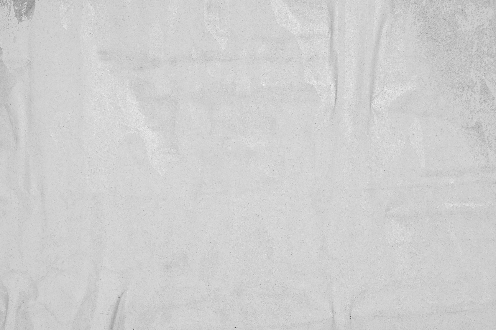
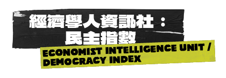

2023
中華民國（臺灣）
R.O.C (Taiwan)
8.92
分


經濟學人智庫的民主指數提供了 165 個獨立國家和兩個領土民主狀況的概況。這幾乎涵蓋了世界上的全部人口和世界上絕大多數國家（不包括微觀國家）。民主指數以 0-10 分制評分，以五個類別為基礎：選舉過程和多元化、政府運作、政治參與、政治文化和公民自由。根據這些類別中一系列指標的得分，每個國家都被分為四種政體類型之一：「完全民主」、「有缺陷的民主」、「混合政體」或「獨裁政體」。
無國界記者 / 世界新聞自由指數